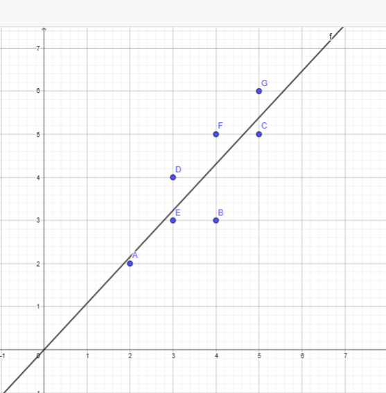

Proyek Analisis Data: Regresi Linier Sederhana#
Proyek ini bertujuan untuk membangun model Regresi Linier sederhana berdasarkan sekumpulan data observasi. Model ini dievaluasi menggunakan dua pendekatan:
Pendekatan Analitik: Menghitung koefisien regresi (\(a\) dan \(b\)) secara manual menggunakan rumus matematika statistik.
Pendekatan Pemrograman: Menghitung koefisien regresi menggunakan library
scikit-learndari Python.
Dataset#
Titik data observasi yang digunakan adalah sebagai berikut:
Titik: \(A(2, 2), B(4, 3), C(5, 5), D(3, 4), E(3, 3), F(4, 5), G(5, 6)\)
Variabel Independen (\(X\)) =
[2, 4, 5, 3, 3, 4, 5]Variabel Dependen (\(Y\)) =
[2, 3, 5, 4, 3, 5, 6]Jumlah data (\(N\)) = 7

1. Perhitungan Secara Analitik (Manual)#
Model Regresi Linier didefinisikan dengan persamaan garis lurus: $\(Y=a+bX\)$
Untuk mencari nilai konstanta/intercept (\(a\)) dan koefisien/slope (\(b\)), dibutuhkan tabel bantuan turunan dari \(X\) dan \(Y\):
\(X\) |
\(Y\) |
\(XY\) |
\(X^2\) |
|---|---|---|---|
2 |
2 |
4 |
4 |
4 |
3 |
12 |
16 |
5 |
5 |
25 |
25 |
3 |
4 |
12 |
9 |
3 |
3 |
9 |
9 |
4 |
5 |
20 |
16 |
5 |
6 |
30 |
25 |
\(\Sigma X=26\) |
\(\Sigma Y=28\) |
\(\Sigma XY=112\) |
\(\Sigma X^2=104\) |
Menghitung Koefisien Garis Kemiringan (\(b\))#
Rumus untuk kemiringan garis regresi adalah: $\(b=\frac{N(\Sigma XY)-(\Sigma X)(\Sigma Y)}{N(\Sigma X^2)-(\Sigma X)^2}\)$
Substitusi nilai dari tabel: $\(b=\frac{7(112)-(26)(28)}{7(104)-(26)^2}\)\( \)\(b=\frac{784-728}{728-676}\)\( \)\(b=\frac{56}{52}=\frac{14}{13}\approx1.077\)$
Menghitung Konstanta / Intercept (\(a\))#
Rumus untuk titik potong sumbu Y adalah: $\(a=\frac{\Sigma Y-b(\Sigma X)}{N}\)$
Substitusi nilai yang telah didapatkan (menggunakan pecahan murni agar presisi maksimal): $\(a=\frac{28-(\frac{14}{13}\times26)}{7}\)\( \)\(a=\frac{28-28}{7}\)\( \)\(a=\frac{0}{7}=0\)$
Hasil Analitik: Dari perhitungan manual, didapatkan nilai \(a=0\) dan \(b=1.077\). Sehingga persamaan regresi linier analitiknya adalah: $\(Y=1.077X\)$
2. Perhitungan Programatik dengan Python (Scikit-Learn)#
Bagian ini digunakan untuk membuktikan bahwa perhitungan analitik di atas sejalan dengan algoritma pada machine learning modern menggunakan LinearRegression dari sklearn.
import numpy as np
from sklearn.linear_model import LinearRegression
# 1. Menyiapkan dataset
# X di-reshape menjadi array 2D sesuai format matriks fitur scikit-learn
X = np.array([2, 4, 5, 3, 3, 4, 5]).reshape(-1, 1)
y = np.array([2, 3, 5, 4, 3, 5, 6])
# 2. Inisialisasi dan melatih model Regresi Linier
model = LinearRegression()
model.fit(X, y)
# 3. Mengekstrak intercept (a) dan koefisien (b)
a = model.intercept_
b = model.coef_[0]
# 4. Menampilkan hasil
print("=== Hasil Regresi Linier menggunakan Scikit-Learn ===")
print(f"Konstanta / Intercept (a) : {a:.3f}")
print(f"Koefisien / Slope (b) : {b:.3f}")
print(f"Persamaan Garis : Y = {a:.3f} + {b:.3f}X")
3. Visualisasi Model#
Untuk melihat bagaimana garis regresi yang dihasilkan membelah titik-titik data observasi, divisualisasikan grafik Cartesian berdasarkan persamaan \(Y=1.077X\).(Tempatkan Gambar: Screenshot dari grafik GeoGebra yang menampilkan titik A-G beserta garis regresi Y=1.077X yang Anda buat)
4. Kesimpulan#
Terdapat konsistensi dan akurasi yang mutlak antara pendekatan analitik matematis dengan pendekatan pemrograman menggunakan scikit-learn. Kedua metode tersebut secara meyakinkan menghasilkan model persamaan regresi linier
Nilai konstanta sebesar 0 menunjukkan bahwa garis regresi dimulai tepat dari titik pusat koordinat \((0,0)\). Sedangkan nilai koefisien kemiringan \(1.077\) mengindikasikan korelasi positif yang kuat; di mana setiap penambahan 1 satuan pada variabel independen \(X\), maka nilai variabel dependen \(Y\) diprediksi akan meningkat sebesar \(1.077\) satuan.